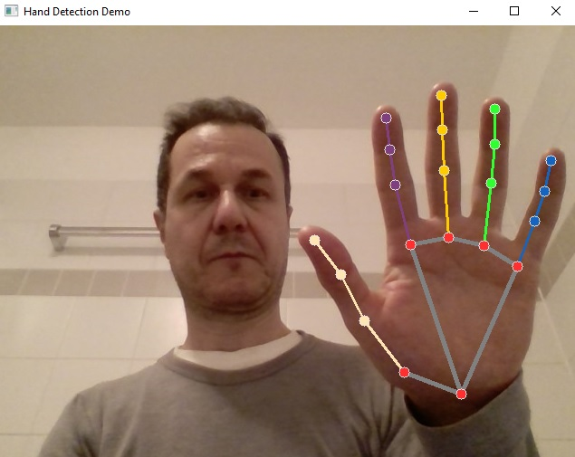

A real-time deep learning based hand detection working on video streams, implemented using OpenCV in
python.Go to Page

A real-time video processing application that replaces the background in video streams. Using advanced segmentation techniques,
this demo identifies people in each frame and seamlessly replaces the existing background with a custom image, implemented using OpenCV in
python.Go to Page
A real-time deep learning based face detection working on video streams, implemented using OpenCV in
python.Go to Page
Collection of PyTorch demonstrations that encompasses essential concepts, including quantization, Automatic Mixed Precision (AMP),
profiling, logging, and pruning. Additionally, it addresses key computer vision topics such as object detection, image classification,
and segmentation.Go to Page
A comprehensive set of essential insights and notes on training and deploying machine learning models, gathered from a range of sources and refined through extensive experimentation. Go to Page